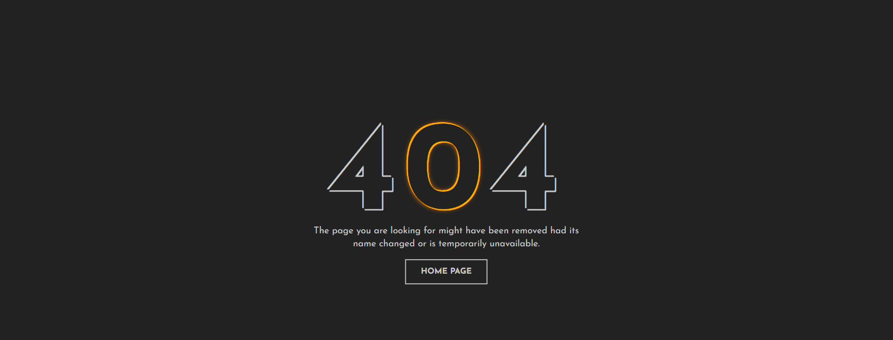

<div class="container-fluid" sm-6>
<div >
    
    <button routerLink="/home"
        style="position: absolute;
        margin-left: 669px;
        width: 136px;
        height: 49px;
        margin-top: -157px;
        background-color: transparent;
        border: transparent;
        border-radius: 0px;" type="button" class="btn btn-outline-light">
    </button>
</div>
</div>